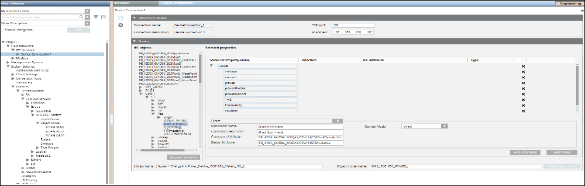

IEC61850 Device Connection Workspace
The IEC61850 Device Connection Workspace allows you to view the objects and properties of the IEC61850 devices that are connected to your system and also provides options to create an Object Model for the IEC61850 devices. In the hierarchy of the System Browser tree, each IEC61850 network contains a set of IEC61850 device connections. In turn, each IEC61850 device connection contains the logical devices attached to that connection.

Device Connection Expander
In Engineering mode, when you select an IEC61850 device connection in the System Browser, its settings display in the Device Connection expander in the IEC61850 tab. You can save the data or delete the IEC61850 device connection using the options available in the toolbar.
IEC61850 Toolbar | ||
Icon | Name | Description |
| Save data | Saves any changes. |
| Delete | Deletes the current object. |


Device Connection Expander Fields | |
Item | Description |
Connection name | Displays the name of the Device Connection object. This is a read only field. |
Connection description | Displays the description of the Device Connection object. This is a read only field. |
TCP port | Displays the TCP port number assigned to the device in the network. You can modify this field. |
IP address | Displays the hardware address of a device connected to a network that uses Internet Protocol (IP) for communication. You can modify this field. |
Browse Expander
The Browse expander lists the objects and properties of the IEC61850 devices that are connected to your system. It also provides options to create an Object Model for the IEC61850 devices without having to create a CSV file. For more information, see Designing the Object Model by Browsing an Online IEC 61850 Device.
Browse Expander Fields | |
Item | Description |
Discover objects (For Designing the object model by browsing an online IEC61850 device) | Prefills the IEC Objects list with the list of objects in the IEC61850 devices connected to your system. The Selected Properties section displays the folder structure for the grouping of related properties of the object models and other columns such as Property Name, Direction, IEC Attribute, and Type. |
Load Elements (For Designing the object model by the offline method) | Prefills the IEC Objects list with the list of objects in the IEC61850 devices connected to your system. The Selected Properties section displays the folder structure for the grouping of related properties of the object models and other columns such as Property Name, Direction, IEC Attribute, and Type. |
IEC Objects | List of IEC61850 objects of the IEC61850 devices connected to your system. |
Selected Properties | Displays the properties of the object selected in the IEC Objects list along with the folder structure under which these properties can be grouped. |
Add Folder | Adds a new folder to the existing folder structure or allows you to create a new folder structure. |
Add command | Displays fields to specify the details of the command properties of the device. |
Command Folder Name | Folder name under which the device command properties are to be added. For example, if you want to issue commands to properties of a circuit breaker, then you can specify the name as Circuit_Breaker_Device. |
Command Name | Name of the command property of the device for which you want to trigger the command. For example, if you want to trigger the open and close command for a circuit breaker on a name property, then specify Name in the Command Name field. |
Command Description | Description of the device property for which you want to trigger the command. |
Command Attribute | Control property of the device for which you want to trigger a command. You must drag and drop the control property from the IEC objects section. |
Status Attribute | Status property of the device for which you want to trigger a command. You must drag and drop the control property from the IEC objects section. |
Control Model | Select the type of commanding from any of the following options for the device: Direct: Command for the device property can be executed via Direct Mode without selecting the object first |
Library name | Name of the IEC61850 library. You must drag the IEC61850 library object from the System Browser to the Library name field. |
Object model name | Name of the IEC61850 Object model to be created. |
Create object model | Creates the IEC61850 Object Model and Import Rules. |